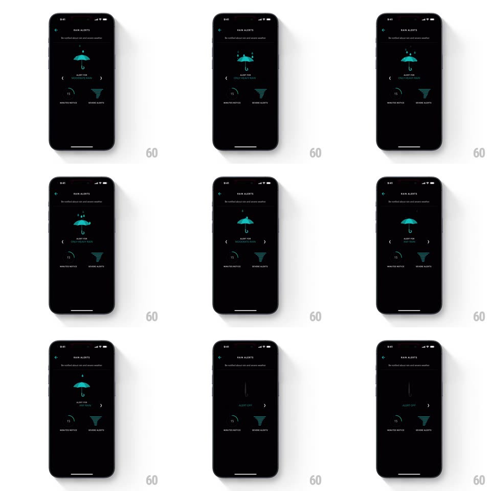

Media
Frame-by-frame

Rebuild this animation 1:1: Timepage's rain alerts screen - a teal umbrella illustration morphs through states as the "ALERT FOR" threshold picker slides between Any Rain, Moderate Rain, Only Heavy Rain, and Off.

Rebuild this animation 1:1: Timepage's rain alerts screen - a teal umbrella illustration morphs through states as the "ALERT FOR" threshold picker slides between Any Rain, Moderate Rain, Only Heavy Rain, and Off.
## Integration
Integration: stack-agnostic spec - springs given as stiffness/damping, timed motions as duration + curve; map every value to your framework and animation library of choice.
## Scene
Black settings screen: "RAIN ALERTS" with "Be notified about rain and severe weather", a teal line-drawn umbrella center stage, a threshold picker with < > chevrons ("ALERT FOR ANY RAIN"), and two controls below - a "15 MINUTES NOTICE" arc dial and a "SEVERE ALERTS" stepped triangle.
## Motion spec
Pattern: illustration morph driven by picker state, ~450ms per step.
- Picker: tapping a chevron slides the label out sideways and the next in (250ms, ease-out) with a fade.
- Umbrella morph: ANY RAIN opens the umbrella with two raindrops; MODERATE adds more drops; ONLY HEAVY RAIN shows a dense cluster of drops bouncing off the canopy (drops fall 400ms, staggered, loop); ALERT OFF closes the umbrella to a thin cane (the canopy folds down, 350ms, ease-in-out).
- Drops: each drop falls past the canopy and fades (600ms), looping while the state holds.
## Calibration
- The umbrella is a single illustration that morphs - closed cane to open canopy is one continuous shape change.
- The picker label and the morph stay in lockstep; the morph starts with the slide.
## Reduced motion
The umbrella swaps states with a 200ms crossfade.
## Don't miss
- Raindrops only exist in rain states - none linger into ALERT OFF.
- The closed state reads as a cane, not a shrunken open umbrella.